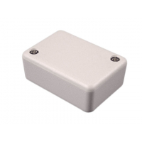

Project template containing the recommended board layout for Hammond Manufacturing 1551K:
Translucent - Blue: 1551KTBU - HM1146-ND
Gray: 1551KRGY - HM3447-ND
Black: 1551KRBK - HM3446-ND
Gray: 1551KGY - HM380-ND
Gray: 1551KFLGY - HM1783-ND
Black: 1551KFLBK - HM1067-ND
Black: 1551KBK - HM377-ND
|  |
|
The "Dwgs.User" layer contains all critical dimmensions in milimeters[inches].
The "Edge.Cuts" layer contains the maximum board outline and holes to align with board standoffs.
PCB Preview: